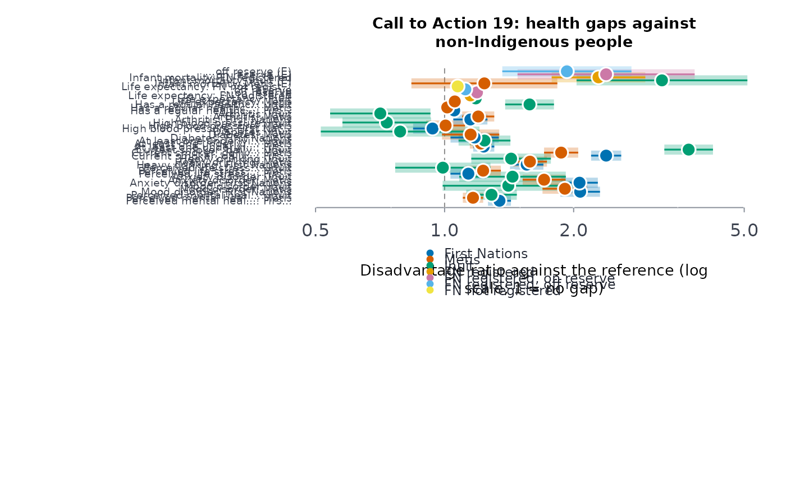

For each health indicator of Call to Action 19 that the published tables measure, each group's estimate against non-Indigenous people's, with its interval, turned into one scale, the disadvantage ratio: the factor by which the group's outcome is worse (above
or better (below 1).
Arguments
- health
A health indicators table (default
indiex("health"), table 13-10-0924), orNULL.- lifeexp
Life expectancy (default
indiex("lifeexp"), table 17-10-0160), orNULL.- infmort
Infant mortality (default
indiex("infmort"), table 17-10-0161), orNULL.- suiide
Suicidal thoughts (default
indiex("suiide"), table 41-10-0021), orNULL.- ref
The reference group's label (default
"Non-Indigenous").
Value
A data frame of class rmbl_trc_gaps: indicator, measure,
period, group, estimate, refest,
difference (group minus reference, on the indicator's scale),
disratio, lower, upper, worse (the interval
above 1), usewithcau. plot() draws it.
Details
The gaps come from indgap on the latest period of each
table, with ref (non-Indigenous people) as the reference. To put years,
rates and percentages on one scale, each gap is given as a ratio oriented by the
indicator's better direction (trcind): the group's estimate over
the reference's where lower is better (infant mortality, chronic conditions), the
reference's over the group's where higher is better (life expectancy, good mental
health, a regular provider):
$$D = \hat\theta_g / \hat\theta_r \ \textrm{(lower is better)}, \qquad
D = \hat\theta_r / \hat\theta_g \ \textrm{(higher is better)}.$$ It is a ratio of the published estimates, not a
relative risk: for life expectancy, D = 1.1 means the reference lives 10% longer, not
that the group's risk is 10% higher. Above 1 the group fares worse; the interval is
the published one carried through (indgap's log-scale interval, inverted
where needed). The difference on the indicator's own scale is kept beside it.
This is a description of gaps that Call 19 asks to be closed, measured as the surveys
measure them; it is not a ranking of peoples. Report it with the trends
(healchg) and the strengths (welprof) that
sit beside it.
Each table is in the long layout of scests (or
indiex()): columns group, indicator or measure,
period, estimate, lower, upper, quality, and
age for the health and suicidal-ideation tables (the all-ages total is used).
The latest period with estimates is taken. Table 41-10-0021 publishes Indigenous groups
only, so it adds a gap only when given a table with ref rows.
References
Truth and Reconciliation Commission of Canada (2015), see
trcind.
Examples
g <- trchlthgap()
g[g$group == "Inuit", c("indicator", "measure", "period", "disratio",
"lower",
"upper")]
#> indicator
#> 3 mental health
#> 6 mental health
#> 9 mental health
#> 12 mental health
#> 15 addictions
#> 18 addictions
#> 21 chronic diseases
#> 24 chronic diseases
#> 27 chronic diseases
#> 30 chronic diseases
#> 33 availability of appropriate health services
#> 35 life expectancy
#> 41 infant mortality
#> measure
#> 3 Perceived mental health, very good or excellent
#> 6 Mood disorder
#> 9 Anxiety disorder
#> 12 Perceived life stress, most days quite a bit or extremely stressful
#> 15 Heavy drinking
#> 18 Current smoker, daily or occasional
#> 21 At least one underlying chronic health condition
#> 24 Diabetes
#> 27 High blood pressure
#> 30 Arthritis
#> 33 Has a regular healthcare provider
#> 35 Life expectancy at birth
#> 41 Infant mortality rate
#> period disratio lower upper
#> 3 2019/2022 1.2866109 1.1232126 1.4737794
#> 6 2019/2022 1.4081633 0.9896701 2.0036210
#> 9 2019/2022 1.4403670 1.0818938 1.9176161
#> 12 2019/2022 0.9906103 0.7669202 1.2795449
#> 15 2019/2022 1.4293478 1.1542808 1.7699638
#> 18 2019/2022 3.7099237 3.2557968 4.2273933
#> 21 2019/2022 1.2389163 1.0779379 1.4239350
#> 24 2019/2022 0.7875000 0.5142662 1.2059052
#> 27 2019/2022 0.7329843 0.5776288 0.9301232
#> 30 2019/2022 0.7079208 0.5406707 0.9269078
#> 33 2019/2022 1.5782689 1.3845078 1.7991467
#> 35 2016/2021 1.1818940 1.1636936 1.2003791
#> 41 2014/2016 3.2142857 2.0315414 5.0856128
plot(g)
